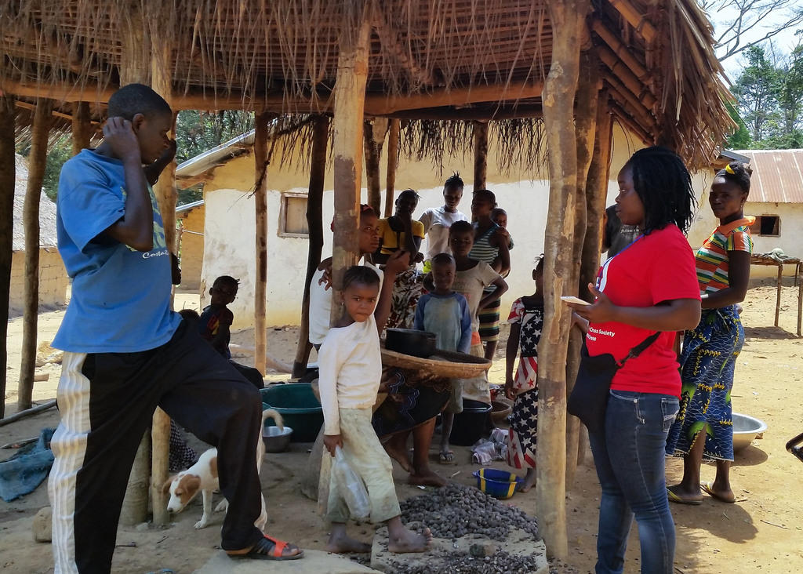
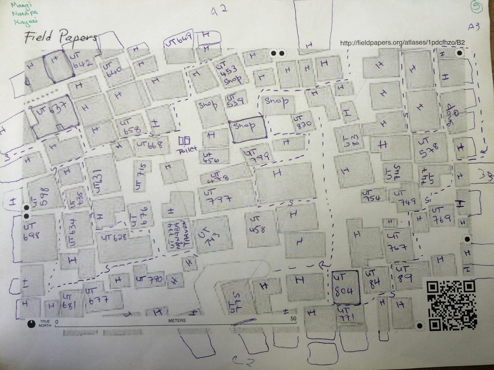
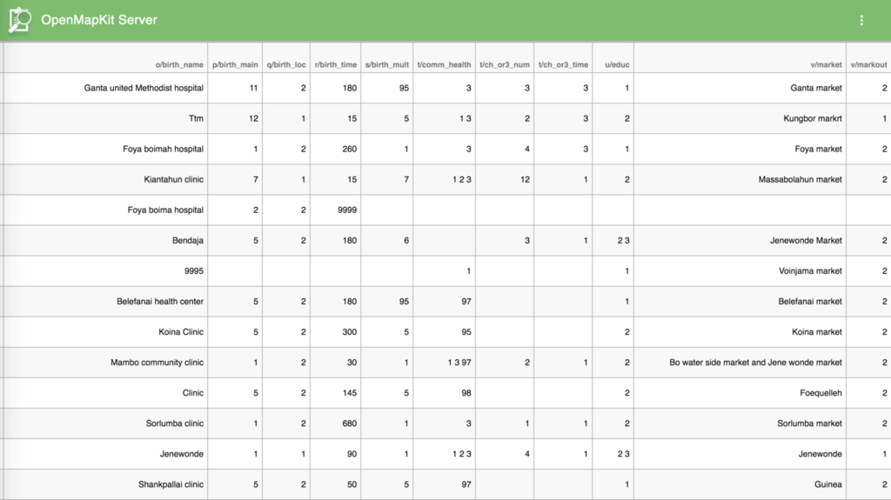

Dale Kunce
@calimapnerd / American Red Cross
Dale, I lead the GIS team at the American Red Cross
Red Cross FOSS4G
My team's work is powered by FOSS. Everyone on the team uses FOSS software everyday. Many others contribute directly to projects
Red Cross
is 100% Open Source
The RC GIS team is 100% open source. all of our work is done using FOSS tools. We train others on how to use FOSS4G. The traditional cost of propritary software is both to high for us and puts an undo burden on the folks with work with around the world. We call this a leave behind cost. We strive to make our leave behind cost $0.
OSM is the Core
FOSS tools only get us so far. For data both before and after major events we prefer OSM. It fits with our needs and we love empowering people to collect and map their communities.
in the field
We don't just map from a far. Our team gets mud on our shoes. We are constantly out adding the detail to the map that you can't see from space. The detail is not just about making the map pretty but about understanding and preparing the community for the worst day they will ever see.
our version of field is really remote
We aren't mapping next to our local pub and going for bike rides after. We aren't mapping before we meet up with friends. Our mapping is often in the most remote places in the world. Places where there i no tourism industry let alone local OSM mappers.
we field map at scale
Conversly our mapping projects tend to be very very intense. We map very large areas in a just a few days or weeks. We can map every poi, streetname, and building in a 10-20km2 area in a week.
Our mapping is also just at a different scale. Recently for a mapping trip in west africa we configured over 130 phones. We are training 200+ people to map in OSM. Many have never used a smartphone or GPS before.
We train lots of new mappers so more traditional OSM tools like Maps.Me or vespuccia don't work in these contexts
local mapping
We also depend on and use the Red Cross network extensively. We can map anywhere in the world with people from any given place. We help to create and build local mappers.
community mapping
We map in different ways, we are not often interested in everything we can map but more likely in a small number of features across huge areas such as hospitals or road conditions. Or we are interested in stuff like building=quality that only a few others are interested in.
We map in different ways, we are not often interested in everything we can map but more likely in a small number of features across huge areas such as hospitals or road conditions. Or we are interested in stuff like building=quality that only a few others are interested in.
partially connected
Lastly we map in areas where internet or power is often not riliable or is non-existent.
Ebola
Ebola changed a lot of things. The most important thing it changed for my team was a desire to do more on the ground mapping, especially in the remotest areas in the world.
Working with a very good partner we decided to map the Liberian, Guinea, and Sierra Leone borders. The area is just a little smaller than Switzerland or for us American's West Virginia.
<$300
the goal of the POSM hardware is to make it as cheap as possible. Currently we have things running on a <$300 Intel Nuc. Our eventual goal is to get it running on a Raspberry Pi, we've already had lot of success running OMK Server on lightweight hardware.
um yeah there is a lot going on. Offline OSM is really complicated. The project managers on the project literally had a panic attack and started screaming scope scope over and over again when we made this diagram.
posm build
all of this cool tech is great and all but we needed a very simple way to deply it to the servers. something that even I could follow. Right from the begining on the very first day we specced out posm-build. posm-build is a custom ubuntu build with kickstart to modulary install all the pieces you need to run all or part of the posm stack.
HOT Export
Captive Portal
for posm to work right and makes the setup of clients super easy we needed to control the wifi, we built a captive portal that will grab any wifi client and redirect to posm.
OSMAPI
after some back and forth we put the whole OSMAPI on the server.
POSM Carto
existing map styles just weren't good enough so we made a high contrast style for B/W rendering for Field Papers
POSM Admin
POSM admin interface allows users to change all kinds of stuff including wifi settings, disk space, etc. The most important feature is the ability to provision the server with

Deployments

Live disconnected editing of OSM
we have a custom version of iD that allows us to moderate edits as they come in from the field and save to the local OSM API
we have a custom version of iD that allows us to moderate edits as they come in from the field and save to the local OSM API
once we have all the data from the field we need to push it to OSM. We built a replay tool that takes all of the local edits on POSM and sends them to OSM changeset by changeset to minimize conflicts and be more in line with how OSM actually works. I don't fully understand it right now but the goal is to make it a simple button eventually.
OSM Replay Tool
once we have all the data from the field we need to push it to OSM. We built a replay tool that takes all of the local edits on POSM and sends them to OSM changeset by changeset to minimize conflicts and be more in line with how OSM actually works. I don't fully understand it right now but the goal is to make it a simple button eventually.
Project Links
- http://github.com/americanredcross/posm
- http://openmapkit.org
- http://github.com/americanredcross/openmapkit
Demo?!?!